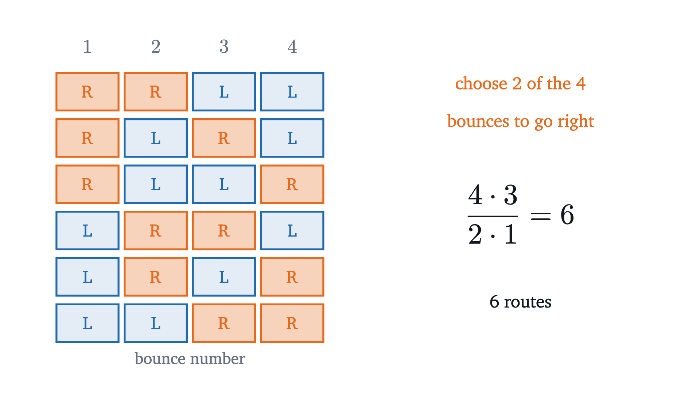
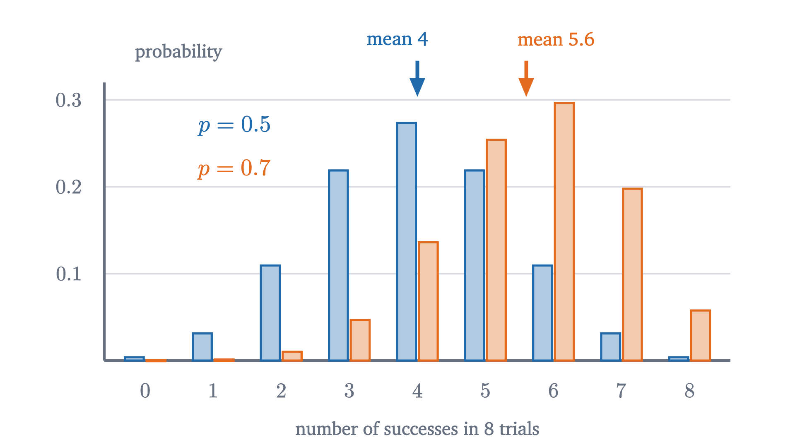
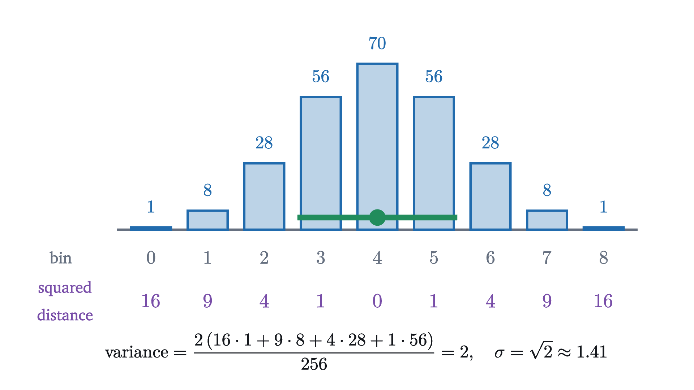
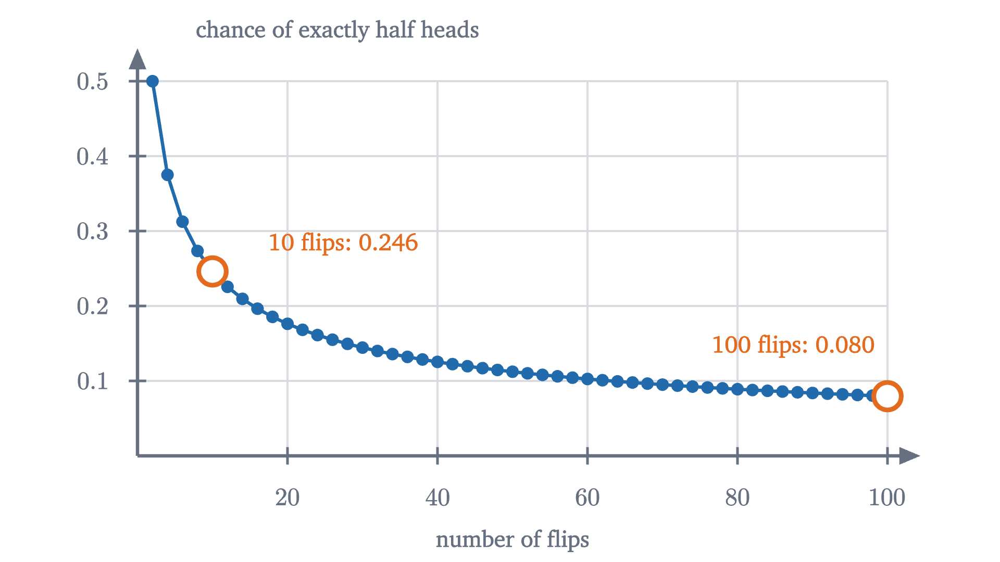

Binomial distribution: Pascal's triangle and a Galton board
Balls bouncing through rows of pegs pile up in the middle. Counting their paths gives Pascal's triangle and the binomial formula, with its mean and variance.
AssumesWhat probability means: counting equally likely outcomesExpected value and the surprising power of adding averages
Drop a ball into the top of the board above. At each peg it bounces left or right with equal chance, eight times, and lands in one of nine bins. No peg prefers a direction and no route down the board is more likely than any other. Yet the balls do not spread evenly: the middle bin collects dozens of them, and the two outer bins are lucky to get one.
The device is called a Galton board, after Francis Galton, who built one in the 1870s. The puzzle it poses is where the preference for the middle comes from when every single bounce is perfectly even. The resolution is a matter of counting, and the counting leads to one of the most used formulas in probability.
Every path is equally likely, but the bins are not
Start with a board small enough to list everything. With two rows of pegs a ball bounces twice, and its route is one of LL, LR, RL, RR, where L and R record a bounce to the left or right. Each bounce is a fair coin flip that does not depend on the one before, so the four routes are equally likely, with probability $\frac12 \cdot \frac12 = \frac14$ each.
Where the ball lands depends only on how many of its bounces went right. Zero rights puts it in the left bin, two rights in the right bin, and one right in the middle bin whichever order the bounces came in. So the three bins receive 1, 2 and 1 of the four routes, and their probabilities are $\frac14$, $\frac24$, $\frac14$. The middle bin is favored because two different routes end there.
Pause and try
A board has three rows of pegs, so a ball bounces three times and there are four bins. List all the routes, and find the probability of each bin.
Show answerHide answer
There are $2^3 = 8$ routes: LLL; LLR, LRL, RLL; LRR, RLR, RRL; RRR, grouped here by the number of rights. The bins receive 1, 3, 3, 1 routes, so their probabilities are $\frac18, \frac38, \frac38, \frac18$.
This is the whole explanation, and it scales. With $n$ rows there are $2^n$ equally likely routes, each with probability $(\frac12)^n$, and by the counting rule for equally likely outcomes from the lesson on sample spaces,
The eight-row board has $2^8 = 256$ routes, which is too many to list comfortably. We need a way to count routes without writing them out.
Counting routes peg by peg
Instead of following whole routes, ask a local question at each peg: in how many ways can a ball get here?
The rule in the third step is the engine. A ball reaches a given peg either from the peg above and to its left or from the peg above and to its right, and never from both, so the routes to it are the routes to the first plus the routes to the second. Each number in the triangle is the sum of the two above it, with 1s down the edges, where only one parent exists. This array is known as Pascal’s triangle, after Blaise Pascal, who wrote a treatise on it in the 1650s, although it appears centuries earlier in Persian, Indian and Chinese texts.
Continuing the rule for four more rows gives
which sums to 256 as it should. So on the eight-row board the middle bin has probability $\frac{70}{256} \approx 0.273$ and each end bin $\frac{1}{256} \approx 0.004$. A ball is 70 times as likely to finish in the middle as at a given end. Out of 256 balls we expect about 1, 8, 28, 56, 70, 56, 28, 8, 1. The simulation at the top produced 1, 8, 22, 55, 75, 51, 29, 13, 2, which has the same shape and the amount of scatter that 256 random balls should show.
A formula for the entries
The triangle has a drawback: to get one entry of row 8 we computed all of rows 1 to 7. There is a direct formula, and it comes from describing a route differently. A route with $k$ rights among $n$ bounces is determined by saying which $k$ of the $n$ bounces are the rights. So the entry we want is the number of ways to choose $k$ positions out of $n$.

To count such choices, pick the positions one at a time. For two rights among four bounces there are 4 options for the first pick and 3 for the second, which is $4 \cdot 3 = 12$ ordered picks. But picking bounce 1 and then bounce 3 gives the same route as picking 3 and then 1, so every route has been counted $2 \cdot 1 = 2$ times, and the number of routes is $12 / 2 = 6$. The same argument works in general. There are $n(n-1)\cdots(n-k+1)$ ordered ways to pick $k$ different positions, and each set of $k$ positions arises from $k!$ of them, one for each order in which it could have been picked. Here $k! = k(k-1)\cdots 2 \cdot 1$ is read “$k$ factorial”, and $0!$ is defined to be 1.
The second form comes from multiplying the top and bottom of the first by $(n-k)!$. With $k = 0$ the formula gives 1: there is one way to choose nothing.
We now have two descriptions of the same numbers, the triangle built by adding and the formula built by choosing, and we should check that they agree.
So the numbers $\binom{n}{k}$ obey the same addition rule as the triangle and have the same 1s on the edges, since $\binom{n}{0} = \binom{n}{n} = 1$. Row by row, they must be the same numbers.
Pause and try
Use the formula to compute $\binom{8}{3}$ and $\binom{8}{4}$, and check them against row 8 of the triangle.
Show answerHide answer
$\binom{8}{3} = \frac{8 \cdot 7 \cdot 6}{3 \cdot 2 \cdot 1} = \frac{336}{6} = 56$ and $\binom{8}{4} = \frac{8 \cdot 7 \cdot 6 \cdot 5}{4 \cdot 3 \cdot 2 \cdot 1} = \frac{1680}{24} = 70$. Both match.
A tilted board
So far left and right were equally likely, which made all routes equally likely and reduced everything to counting. Most real questions of this type are lopsided: a basketball player makes 70% of her free throws, a factory’s parts are defective 5% of the time. Tilt the board so that each bounce goes right with probability 0.7 and left with probability 0.3, still independently of the other bounces. Counting routes is no longer enough, because the route RRR is now far more likely than LLL.
Pause and try
On the tilted board with three rows, what is the probability that exactly two of the three bounces go right? Find the probability of one such route first.
Show answerHide answer
The route RRL has probability $0.7 \times 0.7 \times 0.3 = 0.147$. The routes RLR and LRR multiply the same three numbers in a different order, so each is also $0.147$. The three routes are different outcomes, so their probabilities add: $3 \times 0.147 = 0.441$.
The figure shows the two ingredients separately. The probability of one route depends only on how many rights and lefts it contains: with $k$ rights and $3 - k$ lefts it is $0.7^k \times 0.3^{3-k}$. The number of routes with $k$ rights is $\binom{3}{k}$, the same count as on the fair board, because tilting changes the odds and leaves the list of routes alone. Multiplying the two gives the chance of $k$ rights.
To state the general result we need to say exactly what experiment it describes. Call one bounce a trial, and call a right a success and a left a failure; the names are conventional and carry no judgment.
This is the multiplication rule for independent events built into a definition: the chance of a particular run of results is the product of the chances of each result.
A random variable with these probabilities is said to have the binomial distribution with parameters $n$ and $p$. With $p = \frac12$ the formula reduces to $\binom{n}{k}/2^n$, the fair board.
One loose end: the probabilities in the definition should add to 1 over all $2^n$ sequences. Grouping the sequences by their number of S’s, the total is $\sum_{k=0}^{n} \binom{n}{k} p^k (1-p)^{n-k}$. This equals $(p + (1-p))^n = 1$ by the binomial theorem, which says $(x + y)^n = \sum_k \binom{n}{k} x^k y^{n-k}$. That theorem is the same count again. Multiplying out $n$ copies of $(x + y)$ means choosing $x$ or $y$ from each factor, and the term $x^k y^{n-k}$ arises once for every choice of which $k$ factors supply the $x$. It is also where the word “binomial” comes from.

The mean
On the fair eight-row board the bins are symmetric about bin 4, so the average number of rights is 4. On the tilted board the figure marks the mean at 5.6, which is $8 \times 0.7$. That pattern holds in general and takes one line to prove, using the main result of the lesson on expected value. To restate what we need: the expected value $E[X]$ of a random variable $X$ on a finite sample space is the sum of its values weighted by their probabilities; expected values add, $E[X + Y] = E[X] + E[Y]$, whether or not $X$ and $Y$ are independent; and the indicator of an event, which is 1 when the event occurs and 0 otherwise, has expected value equal to the event’s probability.
For $i = 1, \dots, n$ let $X_i$ be the indicator that trial $i$ is a success. Then $X = X_1 + \dots + X_n$, because the sum adds 1 for each success. Each $X_i$ has expected value $p$, the probability that trial $i$ succeeds. (In the definition, the sequences with an S in position $i$ have total probability $p$ times the total over everything that can happen in the other $n - 1$ positions, and that total is 1.) So
A player who makes 70% of her free throws makes 7 of 10 on average, which nobody doubted. The indicators earn their keep in the next computation.
Variance: how far from the mean
The mean says where the distribution is centered. It does not say how tightly. A fair board with 8 rows has mean 4, and one with 64 rows has mean 32, but how far from 32 should we expect a ball to land: within 2 bins, or 10, or 30? We need a number that measures spread.
The natural candidate is the average distance from the mean. Write $\mu = E[X]$. The average of the signed deviation $X - \mu$ is useless, since $E[X - \mu] = E[X] - \mu = 0$: deviations to the left and right cancel. To stop the cancellation we square the deviation before averaging.
The square root is there to repair the units: if $X$ counts balls, the variance is in “balls squared” and the standard deviation is in balls again, so it can be compared with $X$ directly. (Averaging $|X - \mu|$ would also prevent cancellation. The square is preferred because it leads to simple algebra, as we are about to see.)

For the fair eight-row board the definition gives variance 2 and standard deviation $\sqrt2 \approx 1.41$. Bins 3, 4 and 5, the ones within about one standard deviation of the mean, hold $\frac{56 + 70 + 56}{256} \approx 71\%$ of the balls.
Computing a variance bin by bin is laborious. For the binomial distribution there is a closed form, and the proof reuses the indicators.
Check it against the figure: $n = 8$ and $p = \frac12$ give $8 \cdot \frac12 \cdot \frac12 = 2$. For one trial the variance is $p(1-p)$, which is largest at $p = \frac12$ and zero at $p = 0$ or $1$, where the result is certain and there is no spread at all. The theorem says that $n$ independent trials have $n$ times the variance of one.
The bell shape
The standard deviation $\sqrt{np(1-p)}$ grows like $\sqrt{n}$, and this has a visible consequence. A fair board with 4, 16 or 64 rows has standard deviation 1, 2 or 4 bins. Each time the board gets four times as deep, the pile gets only twice as wide. Measured against the full width of the board, which is $n$ bins, the pile is getting narrower.
The smooth bell that the bars approach is the normal curve, and the precise statement is the de Moivre–Laplace theorem: for large $n$, the binomial probabilities are closely approximated by a normal curve with the same mean $np$ and standard deviation $\sqrt{np(1-p)}$. We have not proved that here; it needs calculus. What we have proved is the part about the width, and the next lesson turns it into a theorem about averages.
Worked examples
When the formula does not apply
The theorem has two hypotheses hidden in the phrase “independent trials with success probability $p$”: the trials do not influence each other, and every trial has the same chance of success. Drawing cards without replacement keeps the second and breaks the first. Deal 5 cards from a 52-card deck and count the aces. Each card dealt is an ace with probability $\frac{4}{52} = \frac{1}{13}$, but the draws are dependent, since an ace on the first card leaves fewer aces for the second. The exact chance of no aces is
while the binomial formula with $n = 5$, $p = \frac{1}{13}$ would give $\left(\frac{12}{13}\right)^5 \approx 0.6702$. The mean, on the other hand, is still $np = \frac{5}{13}$, because linearity of expectation does not need independence. The variance formula does need it, and fails here.

Stepping back
The Galton board’s preference for the middle is a fact about counting. Each route is as likely as any other, and the middle bins are where most routes end. Making that precise took two separate ideas, which the formula keeps visibly apart: the binomial coefficient counts the orders in which $k$ successes can occur, and the powers of $p$ and $1 - p$ give the probability of any one order.
The mean $np$ and the variance $np(1-p)$ both came from writing the count as a sum of indicators, and neither required the formula for $P(X = k)$ at all. The variance carries the more useful message. Spread grows like $\sqrt n$ while the range of possible counts grows like $n$, so the fraction of successes in a long run of trials is squeezed toward $p$. The next lesson makes that statement exact: it is the law of large numbers.
Check yourself
A fair coin is flipped 4 times. What is the probability of exactly 2 heads?
Problems
The first three are direct uses of the formula. The next three ask for an explanation or a short derivation. The last two extend the lesson.
Problem 1
Write out row 6 of Pascal’s triangle. Use it to find the probability of exactly 3 heads in 6 flips of a fair coin.
Show solutionHide solution
Row 5 is $1, 5, 10, 10, 5, 1$. Adding neighbors gives row 6: $1, 6, 15, 20, 15, 6, 1$, which sums to $64 = 2^6$. So $P(\text{3 heads}) = \frac{20}{64} = 0.3125$. By the formula, $\binom{6}{3} = \frac{6 \cdot 5 \cdot 4}{6} = 20$.
Problem 2
A fair die is rolled 5 times. Find the probability of exactly two sixes, and the mean and variance of the number of sixes.
Show solutionHide solution
The rolls are $n = 5$ independent trials with success (“a six”) probability $p = \frac16$. Then
The mean is $np = \frac56$ and the variance is $np(1-p) = 5 \cdot \frac16 \cdot \frac56 = \frac{25}{36}$.
Problem 3
A multiple-choice test has 10 questions with 4 choices each. A student guesses every answer at random. What is the probability of at least 3 correct answers?
Show solutionHide solution
Each guess is right with probability $p = 0.25$, independently, so the number correct is binomial with $n = 10$. Use the complement:
So $P(X \ge 3) \approx 1 - 0.0563 - 0.1877 - 0.2816 = 0.4744$. The expected score is $np = 2.5$, so three or more correct is close to an even bet.
Problem 4
Explain in two ways why $\binom{n}{k} = \binom{n}{n-k}$: once using the Galton board, and once using the formula.
Show solutionHide solution
Board. Reflect the board left to right. Every route with $k$ rights becomes a route with $k$ lefts, that is, with $n - k$ rights, and different routes have different reflections. So the routes into bin $k$ are matched one to one with the routes into bin $n - k$. Equivalently, choosing which $k$ bounces go right is the same as choosing which $n - k$ go left. Formula. $\binom{n}{n-k} = \frac{n!}{(n-k)!\,(n-(n-k))!} = \frac{n!}{(n-k)!\,k!} = \binom{n}{k}$.
Problem 5
For the binomial distribution with parameters $n$ and $p$, where $0 < p < 1$, show that
Use this to find the most likely number of made free throws for the player in the lesson ($n = 10$, $p = 0.7$).
Show solutionHide solution
From the formula, $\frac{\binom{n}{k+1}}{\binom{n}{k}} = \frac{k!\,(n-k)!}{(k+1)!\,(n-k-1)!} = \frac{n-k}{k+1}$, and the powers contribute one extra $p$ and one fewer $(1-p)$, a factor of $\frac{p}{1-p}$. The probabilities increase from $k$ to $k+1$ exactly when this ratio exceeds 1, that is, when $(n-k)p > (k+1)(1-p)$, which simplifies to $k + 1 < (n+1)p$. For $n = 10$, $p = 0.7$ this reads $k + 1 < 7.7$, so the probabilities rise for $k = 0, \dots, 6$ (up to $P(X = 7)$) and fall afterwards. The most likely value is 7, with probability about 0.267.
Problem 6
Prove that the entries of row $n$ of Pascal’s triangle add up to $2^n$, and that for $n \ge 1$ the entries with alternating signs add up to 0: $\binom{n}{0} - \binom{n}{1} + \binom{n}{2} - \dots = 0$.
Show solutionHide solution
Sum. $\binom{n}{k}$ counts the sequences of $n$ bounces with exactly $k$ rights. Every one of the $2^n$ sequences has some number of rights between 0 and $n$, so adding over $k$ counts each sequence once: $\sum_k \binom{n}{k} = 2^n$. (Or put $x = y = 1$ in the binomial theorem.) Alternating sum. Put $x = -1$ and $y = 1$ in the binomial theorem: $\sum_k \binom{n}{k}(-1)^k = (-1 + 1)^n = 0$ for $n \ge 1$. In words, exactly half of the sequences have an even number of rights. This can also be seen directly: flipping the last bounce pairs each sequence with an even number of rights to one with an odd number.
Problem 7
A student argues: “The chance of a six on one roll is $\frac16$, so the chance of at least one six in four rolls is $4 \times \frac16 = \frac23$.” Find the correct probability, and explain what the number $\frac23$ actually is.
Show solutionHide solution
The complement of “at least one six” is “no six in four rolls”, with probability $\left(\frac56\right)^4 = \frac{625}{1296}$. So the correct answer is $1 - \frac{625}{1296} = \frac{671}{1296} \approx 0.518$. The student’s $\frac23$ is $np$, the expected number of sixes in four rolls. It exceeds the probability of at least one six because the expected value counts a roll with two sixes twice and one with three sixes three times. Adding the four probabilities of $\frac16$ would give the probability of at least one six only if the four events were disjoint, and they are not, since several rolls can show a six together. (The argument cannot be right in general: with seven rolls it would give a probability of $\frac76$.)
Problem 8
Two cards are dealt from a well-shuffled 52-card deck, without replacement, and $X$ is the number of aces among them. Using indicators $X_1$ and $X_2$ for “the first card is an ace” and “the second card is an ace”, find $E[X]$ and $\operatorname{Var}(X)$. Compare the variance with that of a binomial distribution with $n = 2$ and $p = \frac{1}{13}$, and explain the direction of the difference.
Show solutionHide solution
Each card is equally likely to be any of the 52, so $E[X_1] = E[X_2] = \frac{4}{52} = \frac{1}{13}$ and $E[X] = \frac{2}{13}$. For the variance, $X^2 = X_1^2 + X_2^2 + 2X_1X_2 = X_1 + X_2 + 2X_1X_2$. The product $X_1X_2$ is the indicator that both cards are aces, with probability $\frac{4}{52} \cdot \frac{3}{51} = \frac{1}{221}$. So
The binomial variance would be $2 \cdot \frac{1}{13} \cdot \frac{12}{13} = \frac{24}{169} \approx 0.1420$. Dealing without replacement gives a slightly smaller variance. The reason is in the cross term: once one ace is gone, a second is less likely ($\frac{3}{51} < \frac{4}{52}$), so $E[X_1X_2]$ is below $p^2$. The deck pushes the count back toward its mean, which reduces the spread.